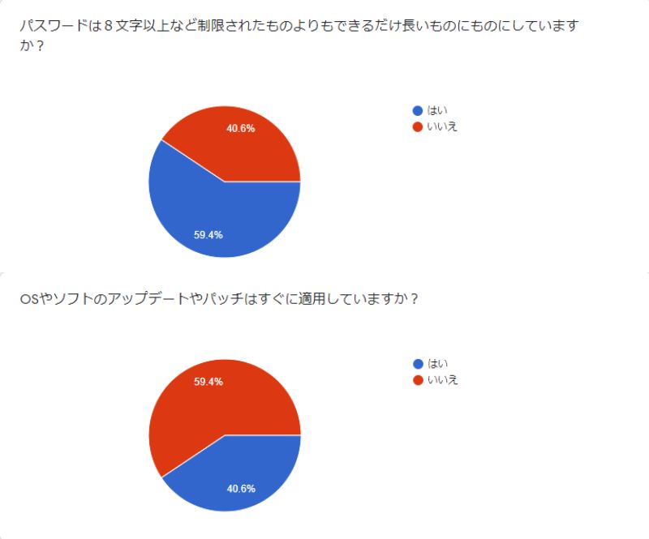
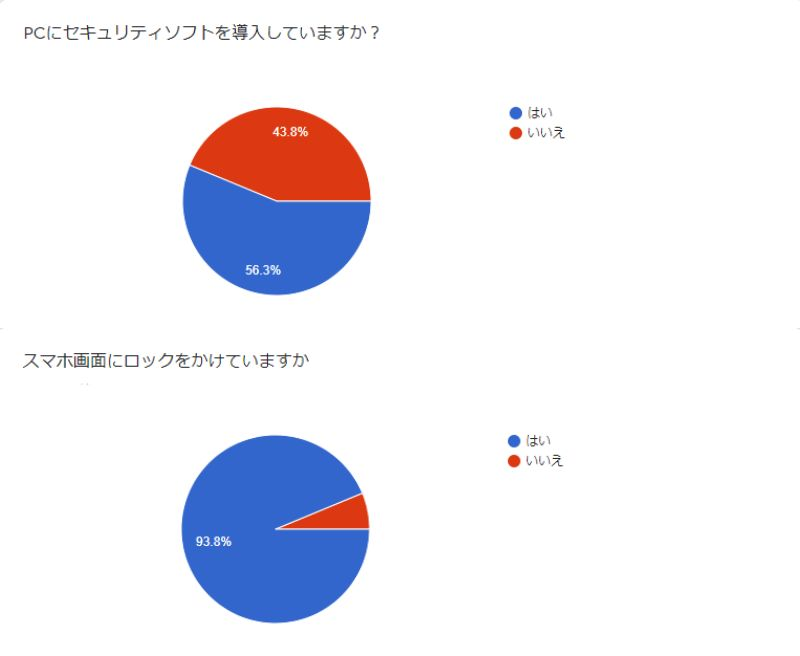
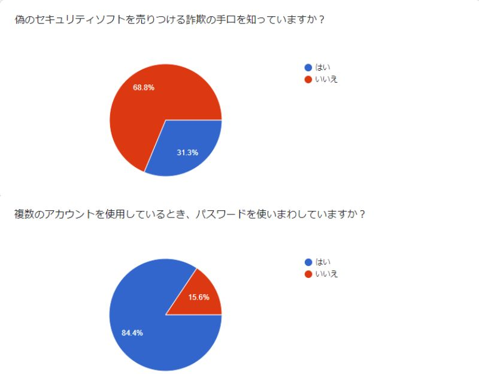

セキュリティ意識向上委員会
このサイトの使い方
１．セキュリティ意識診断テストを受ける
２．自分のセキュリティ意識がどの程度のものか分かったら、セキュリティソフトのWebページとネット詐欺のWebページで自身のセキュリティ意識を向上させましょう
概要
コロナウイルスによる授業や会議のオンライン化によってZoomなどのアプリが注目され始めましたが、
Zoomのアプリで他人が入れてしまう、画面共有で不適切なものが映る[1]などセキュリティに関する問題が上がっていました。
この問題は、はこだて未来大学でも起こりえるものであり、それぞれが高度なセキュリティ意識を持つことが重要となっています。
そこで、IPAの「2019年度情報セキュリティに対する意識調査」を参考に、未来大生にセキュリティ意識に対するアンケートを行い、未来大生の現状を調査しました（アンケート結果は後述します）。
アンケート結果をふまえて、私たちは未来大生のセキュリティ意識を高めるような工夫が必要だと感じたので、
このWebサイトは、自分のセキュリティ意識がどの程度のものなのか理解したうえで、深い知識を身に付けるためのWebサイトとなっています。
出典
[1]CyberSecurity.com：Zoombombing（ビデオ爆撃）とは？攻撃の仕組みやリスク、対策方法まで徹底解説
アンケート
公立はこだて未来大学の学生、約120名を対象にアンケートを実施しました。(全5問)
・パスワードは8文字以上で設定しているか。
・OSやソフトのアップデートやパッチをすぐに適用しているか。
・PCにセキュリティソフトを導入しているか。
・自分の利用するセキュリティソフトがどの程度であるか理解しているか。
・電車やバスでパスワードを入力する際に周りの目を気にするか。
アンケート結果（画像クリックで拡大）



成果物
・Djangoを用いた、実施アンケートを体験するアプリケーション
・セキュリティ意識を向上させるためのWebサイト(ネット詐欺, セキュリティソフト)
活動内容
5月
・プロジェクトの成果物についての話し合い
・グループのスケジュールを決定
・プログラミング学習サイトProgateを使ったHTML/CSSの学習
・アンケートの作成と実施
6月
・HTML/CSSの学習
・プログラム環境の設定(Atom)
・トップページの骨組みのコーディングとレイアウト決定
・２班に分かれてセキュリティソフトの調査と詐欺の手口の調査
・調査の情報をもとにしてサイトコーディング
7月
・各サイトのコーティング
・中間発表の原稿やWebサイトの最終準備
・中間発表
8月
・ネット詐欺についてまとめたWebページ作成
・セキュリティソフトについてまとめたWebページ作成
9月
・ネット詐欺についてまとめたWebページ作成
・セキュリティソフトについてまとめたWebページ作成
10月
・Webサイトのネット詐欺ページ作成
・Webサイトのクイズページ作成
・Djangoを用いたアンケートアプリ作成
・セキュリティソフトの購入
11月
・Webサイトのトップページ作成
・Webページのセキュリティソフトページにセキュリティソフトのレビューを追加
・Djangoを用いたアンケートアプリ作成
12月
・最終発表
{kind=link}
{kind=link}
{kind=link}